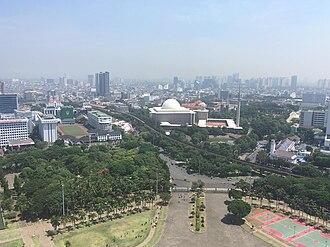

PrésentationتقديمOverview
La mosquée Istiqlal à Jakarta, capitale de la république d'Indonésie, est la plus grande mosquée d'Asie du Sud-Est. Plus de 110 000 personnes peuvent s'y rassembler. Commencée en 1964 à l'époque du président Soekarno, sur les plans de l'architecte indonésien Frederich Silaban (1912–1984), sa construction s'est achevée en 1984.
مسجد الاستقلال، في جاكارتا، أندونيسيا المسجد الأكبر في جنوب شرق آسيا.
Istiqlal Mosque in Jakarta, Indonesia is the largest mosque in Southeast Asia and the ninth largest mosque in the world in terms of worshipper capacity. Built to commemorate Indonesian independence, this national mosque of Indonesia was named "Istiqlal", an Arabic word for "independence". The mosque was opened to the public on 22 February 1978. Within Jakarta, the mosque is positioned next to Merdeka Square, the Jakarta Cathedral (Catholic), and also of the Immanuel Church (Reformed).
İstiklal Camii ya da Masjid İstiqlâl, Endonezya'nın başkenti Cakarta'da bulunan bir camidir. Cami, 22 Şubat 1978 tarihinde açılmış olup Güneydoğu Asya'nın en büyük camisidir ve Merdeka Meydanı ve Cakarta Katedrali'nin yakınlarında yer almaktadır. 120.000'den fazla kişinin aynı anda ibadet edebileceği cami, 1975 yılında Endonezya hükûmeti tarafından inşâ ettirildi.
Masjid Istiqlal adalah sebuah masjid nasional yang berada di Jakarta Pusat, Indonesia. Masjid ini menjadi masjid terbesar di Asia Tenggara dan masjid terbesar kedelapan di dunia dalam hal kapasitas jemaah. Dibangun untuk memperingati kemerdekaan Indonesia, masjid nasional Indonesia ini diberi nama "Istiqlal", kata bahasa Arab untuk "kemerdekaan". Masjid ini dibuka untuk umum pada tanggal 22 Februari 1978. Di dalam Jakarta, masjid ini terletak di sebelah Istana Merdeka dan Gereja Katedral Jakarta (Katolik) dan juga Gereja Immanuel (Reformed).
استقلال مسجد انڈونیشیا کے دار الحکومت جکارتہ میں واقع ایک مسجد ہے۔ جسے جنوب مشرقی ایشیا کی سب سے بڑی مسجد ہونے کا اعزاز حاصل ہے۔ یہ مسجد 1975ء میں حکومت انڈونیشیا نے تعمیر کرائی تھی۔ اس مسجد میں بیک وقت 120،000 نمازی عبادت کر سکتے ہیں۔ مسجد کے مرکزی گنبد کا قطر 45 میٹر قطر ہے۔ نماز و عبادت کے علاوہ مسجد مختلف سماجی و ثقافتی سرگرمیوں کا بھی مرکز ہے جس میں دروس، نمائشیں، مذاکرے، مباحثے اور عورتوں، نوجوانوں اور بچوں کے لیے مختلف نوعیت کے تقاریب شامل ہیں۔
Die Istiqlal-Moschee in Jakarta, Indonesien ist die größte Moschee in Südostasien. Die indonesische Regierung ließ die Moschee, die mehr als 120.000 Gläubigen Platz bietet, im Jahre 1975 erbauen.
La moschea Istiqlal o moschea dell'Indipendenza a Giacarta in Indonesia è la più grande moschea nel Sud-est asiatico e tra le più grandi del mondo. Fu edificata per commemorare l'indipendenza indonesiana e chiamata "Istiqlal" che significa appunto "indipendenza" in arabo. Fu aperta al pubblico il 22 febbraio 1978. È posizionata vicino a Piazza Merdeka ed alla Cattedrale di Giacarta.
De Istiqlalmoskee is een islamitisch gebedshuis in Jakarta. Het gebouw werd na een bouw van 17 jaar geopend op 22 februari 1978. De Istiqlalmoskee heeft de status van nationale moskee, en is specifiek bedoeld om Indonesië's onafhankelijkheid te gedenken. Istiqlal is Arabisch voor onafhankelijkheid. Het gebouw bevindt zich in centraal Jakarta, naast het Medan Merdeka (Vrijheidsplein).
イスティクラル・モスク は、インドネシアの中央ジャカルタに位置する国立モスクである。東南アジア最大のモスクであり、礼拝者収容数では世界で8番目に大きいモスクである。
이스티클랄 모스크(인도네시아어: Masjid Istiqlal)은 인도네시아 자카르타에 있는 모스크이다. 동남아시아에서 가장 큰 모스크이자 예배 수용 능력 측면에서 세계에서 9번째로 큰 모스크이다. 인도네시아 독립을 기념하기 위해 지어진 이 인도네시아 국립 모스크는 "독립"을 뜻하는 아랍어인 "이스티클랄(ٱلْإِسْتِقْلَال)"로 명명되었다. 모스크는 1978년 2월 22일 대중에게 공개되었다. 자카르타 내에서 모스크는 므르데카 광장과 자카르타 대성당 옆에 위치해 있다.
इस्तिक़लाल मस्जिद इंडोनेशिया के जकार्ता शहर में स्थित दक्षिण पूर्व एशिया की सबसे बड़ी मस्जिद तथा विश्व की नौवीं सबसे बड़ी मस्जिद है। इसे देश की स्वतंत्रता की स्मृति में निर्मित की गई थी और 22 फ़रवरी 1978 को जनता के लिए खोली गई। जकार्ता में, यह मर्देका चौक, जकार्ता कैथेड्रल और इमैनएल गिरजाघर के निकट खड़ी है।
Мечеть Истикляль в Джакарте, Индонезия, — самая большая мечеть в Юго-Восточной Азии.
Moscheea Istiqlal este o moschee din Jakarta, Indonezia. Aceasta este moscheea națională a acestei țări și cea mai mare moschee din Asia de Sud-Est. Numele de Istiqlal sau Masjid Istiqlal înseamnă Moscheea Independenței.
Histoires et récitsقصص ورواياتStories and accounts
Fait historiqueواقعة تاريخيةHistorical factLa mosquée de l'Indépendance, dessinée par un chrétienمسجد الاستقلال من تصميم مهندس مسيحيThe Independence Mosque, designed by a Christian
« Istiqlal » veut dire « indépendance » en arabe : la mosquée nationale de l'Indonésie célèbre la liberté du pays, obtenue après la Seconde Guerre mondiale. Le président Soekarno soutint le projet et un concours d'architecture fut organisé. Le gagnant fut Friedrich Silaban, fils d'un pasteur protestant de l'île de Sumatra. La mosquée, l'une des plus grandes d'Asie du Sud-Est, fut ouverte au public le 22 février 1978.«الاستقلال» كلمة عربية، ومسجد الاستقلال هو المسجد الوطني لإندونيسيا، يحتفي بحرية البلاد التي نالتها بعد الحرب العالمية الثانية. ودعم الرئيس سوكارنو المشروع، ونُظّمت مسابقة معمارية فاز بها فريدريش سيلابان، وهو ابن قسّ بروتستانتي من جزيرة سومطرة. وفُتح المسجد، وهو من أكبر مساجد جنوب شرق آسيا، للناس في 22 فبراير 1978."Istiqlal" means "independence" in Arabic: Indonesia's national mosque celebrates the freedom the country won after the Second World War. President Sukarno supported the project and an architecture competition was held. The winner was Friedrich Silaban, son of a Protestant pastor from the island of Sumatra. The mosque, one of the largest in Southeast Asia, was opened to the public on 22 February 1978.
Source :المصدر:Source: Wikipedia : Istiqlal Mosque, Jakarta
Fait historiqueواقعة تاريخيةHistorical factLe tunnel de l'amitiéنفق الأخوّةThe tunnel of friendship
La mosquée Istiqlal se trouve juste en face de la cathédrale catholique de Jakarta. Les autorités ont creusé sous la rue un passage entre les deux, appelé « tunnel de l'amitié » (Terowongan Silaturahmi). Le 5 septembre 2024, le pape François visita la mosquée, passa par ce tunnel avec le grand imam, et ils signèrent ensemble une déclaration commune pour la paix et la protection de la nature. Le pape y salua l'Indonésie comme un exemple d'harmonie entre religions.يقع مسجد الاستقلال قبالة الكاتدرائية الكاثوليكية في جاكرتا مباشرة. وقد حفرت السلطات تحت الشارع ممرًّا بينهما يُسمّى «نفق الأخوّة» (تروونغان سيلاتورحمي). وفي 5 سبتمبر 2024 زار البابا فرنسيس المسجد، وعبر هذا النفق مع الإمام الأكبر، ووقّعا معًا إعلانًا مشتركًا من أجل السلام وحماية الطبيعة. وأثنى البابا على إندونيسيا مثالًا للوئام بين الأديان.The Istiqlal Mosque stands directly opposite Jakarta's Catholic cathedral. The authorities dug a passage under the street between them, called the "tunnel of friendship" (Terowongan Silaturahmi). On 5 September 2024, Pope Francis visited the mosque, walked through the tunnel with the grand imam, and together they signed a joint declaration for peace and the protection of nature. The pope praised Indonesia as an example of harmony between religions.
Source :المصدر:Source: Wikipedia : Istiqlal Mosque, Jakarta
Toutes les histoires des mosquéesكل قصص المساجدAll the stories of the mosques →
Sur la carteعلى الخريطةOn the map
Documents et liensوثائق وروابطDocuments and links
- Wikipédia — Français
- Wikipédia — العربية
- Wikipédia — English
- Wikipédia — Türkçe
- Wikipédia — Bahasa Indonesia
- Wikipédia — اردو
- Wikipédia — Deutsch
- Wikipédia — Italiano
- Wikipédia — Nederlands
- Wikipédia — 中文
- Wikipédia — 日本語
- Wikipédia — 한국어
- Wikipédia — हिन्दी
- Wikipédia — Русский
- Wikipédia — Română
- Wikidata — Q475379
Données : Wikidata (CC0), mises à jour tous les 3 mois. L'année est la plus ancienne date de construction connue du bâtiment : pour un édifice devenu mosquée plus tard (comme Sainte-Sophie), c'est celle du bâtiment d'origine. Photos : Wikimedia Commons, auteur et licence sur la page de chaque photo.البيانات: ويكي بيانات (CC0)، تُحدَّث كل 3 أشهر. السنة هي أقدم تاريخ معروف لبناء المبنى: فإن صار مسجدًا لاحقًا (مثل آيا صوفيا) فهي سنة المبنى الأصلي. الصور: ويكيميديا كومنز، المؤلف والرخصة في صفحة كل صورة.Data: Wikidata (CC0), updated every 3 months. The year is the earliest known construction date of the building: for a building that became a mosque later (such as Hagia Sophia), it is that of the original building. Photos: Wikimedia Commons, author and licence on each photo's page.
Grandes mosquées du mondeالجوامع الكبرى في العالمGreat mosques of the world →